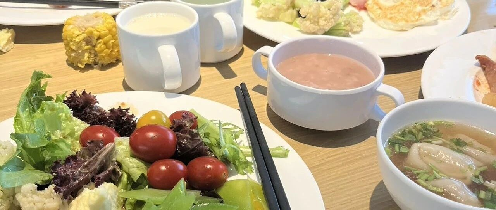

讲真，我过上了小时候理想的生活！
点击关注 秋秋在分享
一起实现财务自由退休
大家好，我是秋秋呀！
我相信你们会懂这份奇妙的感觉！！
早上醒来，八九点钟了，想到今天又是无所事事，不用为钱奔波的一天，听到外面玩耍的仔和弄好早饭的老公，聊聊今天要出去哪玩。
一阵恍惚：天！这不就是我小时候幻想的“完美”生活？
我小时候的梦想就是不上班也有钱，能不停的看世界，工作也是那种写点东西就能养活自己的，有个很幸福的家庭。
现在，我离“大富大贵”还是差着十万八千里，但也实现了“衣食无忧”！
不上班就能养活自己
有自己的价值感来源
一个加分的老公
最重要的是！！！我的孩子！简直人间小太阳。
超级可爱活力满满！
有时候也会淘气，但真的像把我自己重新养了一遍，非常治愈我。
我过上了小时候期待的生活！
我们能一起描绘幸福的模样，在理想的蓝图上添砖加瓦。

然而！🤔重点来了！
如果你问我：“结婚生娃好不好？”
我的答案是：谨慎！！！
好的点： 有人分担风雨，虽然风雨有时也是在一起才有的😅。
比如我俩一起长胖，一起减肥，早恋的时候还要一起挨训。
会有家的归属感的，有人分享喜悦，有了自己的孩子，这种感觉独一无二。
不好的点：
总要面对柴米油盐的，甚至开空调多少度都会有分歧。
我家现在就是2男对1女，生理上他俩一个阵营。
还有家庭的磨合，育儿路上分歧，失去“绝对自由”，各种责任感。
每次孩子惹毛我或者大老王和我吵架，我也会想：结婚生娃的意义到底是什么啊？！！
为了找个伴？为了抵抗无聊？还是……为了体验人生的复杂？
所以，我！宣！布！📢
以后儿子长大了对我说：“妈妈，我不想结婚！”
我！绝！对！不会催！一！句！话！
他的幸福，由他自己定义，他能开心、独立、充实地过好这一生，比什么都重要。
那结婚生子，是怎么成为我人生梦想和必选项呢。
我想明白了！
我过上了小时候梦想的幸福生活，要有“家庭”，与其说是梦想本身，不如说是我对亲密关系的向往。
1. 我期待能处理好「冲突」。
可能我父母以前吵架，我就把幸福温暖，对孩子不指责打骂当成一种理想。
总觉得，人就应该要有一个幸福的家庭。原生家庭不好，就想再创建一个自己的。
2. 我期待拥有支持。
倒不是多缺爱，而是我更期待理解和共鸣。
比如我高中的时候写诗，也没多少人懂，大老王就是真心鼓励我的人。
我也讲过我每一次离职，包括后面创业自媒体，再到完全fire，他都是举双手赞同并且把钱都给拿给我用的人。
我的父母也爱我，却很难这么理解我。
我结婚能获得这份稳定的关系，对我来说比我独身一人要好。
那一个人就没勇气做这些了吗？
可能我体会到有人分享喜悦的快乐，一个人出去最多玩半个月，就觉得美食美景总差点意思。
1➕1大于2的情况下，我才结婚生娃。
而婚姻本身真没意义，甚至沉重，亲密关系才值得我们向往。
那如果有天我的孩子跟我说，我权衡利弊，结婚能享福，我反而觉得不如独身好。
如果他说，我获得了爱，跟你们父母给的不一样。
我拥有了共鸣和支持，我还有更多的爱 金钱 时间 精力释放给孩子，我是举双手赞同的。

我过上了理想的生活！
有钱有闲有价值感都没问题，唯独结婚生子这事太笼统。
写下这篇文章也是，希望分享未婚未育朋友们我的经验。
钱和价值感我验证了都没问题。
唯独不必向往婚姻和家庭，换成稳定的爱与被爱更合适。